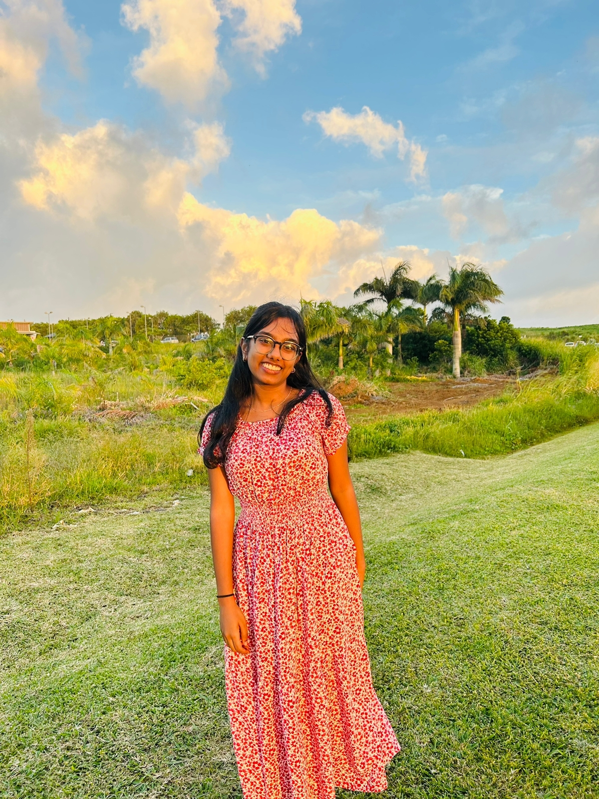

About
Hello there! Welcome to my portfolio! My name is Riya Ishka Puholoo, and I am delighted to have you here. I am in my 20's and joined Curtin Mauritius after having completed my secondary education at MGSS MOKA. I accomplished my School Certificate in 2018 and my Higher School Certifiate in 2021. I am continuously seeking fresh obstacles to tackle. I aspire to infuse everything I do with this way of thinking because I adhere to the dedication and creativity. You can find me practicing soccer, swimming, playing badminton, hiking, running and cycling in my leisure time. These pursuits keep me anchored and energized, and I am constantly curious to learn about new interests.
I think that success depends on maintaining a good work-life balance, and these pursuits keep me focused and motivated. I hope you enjoy looking through my portfolio and learning a little bit more about who I am. I appreciate you coming by.
Skills
Phython
90%
HTML
85%
CSS
80%
Languages
English
100%
French
100%
Hindi
90%
Interests
Sports
90%
Arts
85%
Photography
80%
Projects


Contact
Reflection
I am amazed by how much my professional development and growth have progressed when I review my portfolio. I was unsure of my skills when I began this portfolio and lacked the self-assurance to put myself out there. I have nevertheless improved my skills and confidence through hard work and perseverance. My writing abilities are one of the areas where I have made the greatest progress. When I initially started writing for my portfolio, I found it difficult to express my views and thoughts in a straightforward and direct way. I have, however, improved my writing skills with time and can now write with greater efficiency. I have also made progress in my capacity to collaborate with others. I used to be a little bit of a lone wolf, who would rather work privately rather than in a group. But as I developed this portfolio, I saw how crucial it is to collaborate with people and draw on their knowledge and experience to accomplish common objectives. Additionally, while I was working on my portfolio, I became more aware of my strengths and flaws. This has been really helpful in pointing out my strengths and places where I aim to improve. I have also had the chance to think back on my experiences, what I have learnt from them, and how I might use this information as I have been building my portfolio. Last but not least, I now have a better knowledge of the value of feedback and how to apply it to my work. I have discovered that receiving remarks is an important aspect of learning and that it may point out my weaknesses.Overall, I am happy of the advancements I have achieved and the abilities I have acquired as a result of building this portfolio.
I feel a sense of accomplishment and pride in my work, as I reflect on how I've been able to create the portfolio using HTML and CSS. It's been a tough road, but seeing my vision come to life on the internet was an amazing experience. Ensuring that my codes were clean and coherent was one of the most difficult things I had to do. I've spent a lot of time studying best practices for HTML and CSS, making sure that my code is easy to read and understand for anyone who might need to learn it in the future. Another challenge was making sure my portfolio was responsive and looked good on different devices. I spent a lot of time testing my site on different screen sizes and adjusting the CSS accordingly to make sure everything looks great no matter how you view it. Overall, I'm very proud of the end result. I believe my portfolio accurately reflects my skills and personality and I am excited to share it with potential employers and clients. Along the way, I've learned a lot about HTML and CSS and I'm excited to improve my skills as a web developer. I am eager to advance professionally and am looking forward to the chances and challenges that lie ahead.